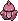

刺耳聲Screech
- 屬性
- 一般
- 分類
- 變化
- 威力
- -
- 命中
- 85%
- SP
- 10
- 冷卻
- 1 秒（變化組）
- 範圍
- 扇形
- 距離
- 3 格
- 段數
- 1
- 前搖
- 0.35 秒
- 接觸
- 否
即時戰鬥效果
降低對手的防禦（-2）。
命中使用者前方扇形範圍內的所有敵人。
升級時學會
阿柏蛇 Lv 25 阿柏怪 Lv 28
阿柏怪 Lv 28 大嘴蝠 Lv 1
大嘴蝠 Lv 1 喵喵 Lv 31
喵喵 Lv 31 貓老大 Lv 34
貓老大 Lv 34 可達鴨 Lv 23
可達鴨 Lv 23 哥達鴨 Lv 23
哥達鴨 Lv 23 猴怪 Lv 41
猴怪 Lv 41 火爆猴 Lv 53
火爆猴 Lv 53 瑪瑙水母 Lv 43
瑪瑙水母 Lv 43 毒刺水母 Lv 47
毒刺水母 Lv 47 小磁怪 Lv 44
小磁怪 Lv 44 三合一磁怪 Lv 53
三合一磁怪 Lv 53 臭泥 Lv 26
臭泥 Lv 26 臭臭泥 Lv 26
臭臭泥 Lv 26 大岩蛇 Lv 1
大岩蛇 Lv 1 霹靂電球 Lv 8
霹靂電球 Lv 8 頑皮雷彈 Lv 1頑皮雷彈 Lv 8
頑皮雷彈 Lv 1頑皮雷彈 Lv 8 大舌頭 Lv 45
大舌頭 Lv 45 電擊獸 Lv 36
電擊獸 Lv 36 小鋸鱷 Lv 43
小鋸鱷 Lv 43 藍鱷 Lv 45
藍鱷 Lv 45 大力鱷 Lv 47
大力鱷 Lv 47 叉字蝠 Lv 1
叉字蝠 Lv 1 長尾怪手 Lv 43
長尾怪手 Lv 43 蜻蜻蜓 Lv 50
蜻蜻蜓 Lv 50 月亮伊布 Lv 47
月亮伊布 Lv 47 土龍弟弟 Lv 34
土龍弟弟 Lv 34 天蠍 Lv 44
天蠍 Lv 44 大鋼蛇 Lv 1
大鋼蛇 Lv 1 狃拉 Lv 15
狃拉 Lv 15 電擊怪 Lv 33
電擊怪 Lv 33 幼基拉斯 Lv 15
幼基拉斯 Lv 15 沙基拉斯 Lv 1沙基拉斯 Lv 15
沙基拉斯 Lv 1沙基拉斯 Lv 15 班基拉斯 Lv 1班基拉斯 Lv 15
班基拉斯 Lv 1班基拉斯 Lv 15 木守宮 Lv 21
木守宮 Lv 21 森林蜥蜴 Lv 23
森林蜥蜴 Lv 23 蜥蜴王 Lv 23
蜥蜴王 Lv 23 鐵面忍者 Lv 20
鐵面忍者 Lv 20 咕妞妞 Lv 31
咕妞妞 Lv 31 吼爆彈 Lv 37
吼爆彈 Lv 37 爆音怪 Lv 37
爆音怪 Lv 37 利牙魚 Lv 28
利牙魚 Lv 28 巨牙鯊 Lv 28
巨牙鯊 Lv 28 超音波幼蟲 Lv 41
超音波幼蟲 Lv 41 沙漠蜻蜓 Lv 41
沙漠蜻蜓 Lv 41 飯匙蛇 Lv 19變隱龍 Lv 24
飯匙蛇 Lv 19變隱龍 Lv 24 怨影娃娃 Lv 8
怨影娃娃 Lv 8 詛咒娃娃 Lv 1詛咒娃娃 Lv 8
詛咒娃娃 Lv 1詛咒娃娃 Lv 8 獵斑魚 Lv 15
獵斑魚 Lv 15 音箱蟀 Lv 34
音箱蟀 Lv 34 頭蓋龍 Lv 37
頭蓋龍 Lv 37 戰槌龍 Lv 43
戰槌龍 Lv 43 雙尾怪手 Lv 25
雙尾怪手 Lv 25 臭鼬噗 Lv 7
臭鼬噗 Lv 7 坦克臭鼬 Lv 7
坦克臭鼬 Lv 7 小卡比獸 Lv 20
小卡比獸 Lv 20 利歐路 Lv 24
利歐路 Lv 24 瑪狃拉 Lv 10
瑪狃拉 Lv 10 自爆磁怪 Lv 34
自爆磁怪 Lv 34 電擊魔獸 Lv 52
電擊魔獸 Lv 52 遠古巨蜓 Lv 46
遠古巨蜓 Lv 46 天蠍王 Lv 27
天蠍王 Lv 27
阿柏怪 Lv 28大嘴蝠 Lv 1喵喵 Lv 31貓老大 Lv 34可達鴨 Lv 23哥達鴨 Lv 23猴怪 Lv 41火爆猴 Lv 53瑪瑙水母 Lv 43毒刺水母 Lv 47小磁怪 Lv 44三合一磁怪 Lv 53臭泥 Lv 26臭臭泥 Lv 26大岩蛇 Lv 1霹靂電球 Lv 8頑皮雷彈 Lv 1頑皮雷彈 Lv 8大舌頭 Lv 45電擊獸 Lv 36小鋸鱷 Lv 43藍鱷 Lv 45大力鱷 Lv 47叉字蝠 Lv 1長尾怪手 Lv 43蜻蜻蜓 Lv 50月亮伊布 Lv 47土龍弟弟 Lv 34天蠍 Lv 44大鋼蛇 Lv 1狃拉 Lv 15電擊怪 Lv 33幼基拉斯 Lv 15沙基拉斯 Lv 1沙基拉斯 Lv 15班基拉斯 Lv 1班基拉斯 Lv 15木守宮 Lv 21森林蜥蜴 Lv 23蜥蜴王 Lv 23鐵面忍者 Lv 20咕妞妞 Lv 31吼爆彈 Lv 37爆音怪 Lv 37利牙魚 Lv 28巨牙鯊 Lv 28超音波幼蟲 Lv 41沙漠蜻蜓 Lv 41飯匙蛇 Lv 19變隱龍 Lv 24怨影娃娃 Lv 8詛咒娃娃 Lv 1詛咒娃娃 Lv 8獵斑魚 Lv 15音箱蟀 Lv 34頭蓋龍 Lv 37戰槌龍 Lv 43雙尾怪手 Lv 25臭鼬噗 Lv 7坦克臭鼬 Lv 7小卡比獸 Lv 20利歐路 Lv 24瑪狃拉 Lv 10自爆磁怪 Lv 34
大舌舔 Lv 45電擊魔獸 Lv 52遠古巨蜓 Lv 46天蠍王 Lv 27招式光碟
 一般屬性招式光碟 ・少見（每打倒一隻該屬性寶可夢 1%，由 119 個招式分配）
一般屬性招式光碟 ・少見（每打倒一隻該屬性寶可夢 1%，由 119 個招式分配）
可以教會 469 隻寶可夢：遊戲中的每一隻都能學（一般屬性招式不限屬性）。